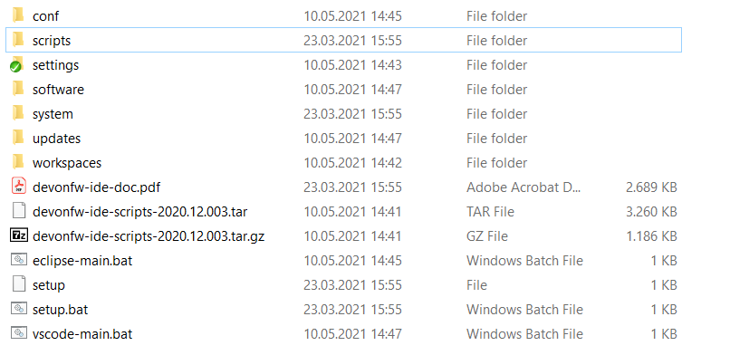

IDE setup using devonfw ide
General Installation Process
-
First of all you will have to setup the devonfw ide. Once the download is complete and you started the installation process via the setup command (or setup.bat), you will be prompted for a settings URL. You can just press enter as no special settings are used. Following that, you will simply have to wait and follow any instructions given.
After you have executed the steps mentioned above, your install location should look like the picture below.
 -
As devonfw ide by default does not install eclipse anymore, we need to setup eclipse first by executing
devon eclipse -
The next step is to open a console and execute the following command:
devon project setup cobigenThis downloads all the necessary files for Cobigen development. -
Build the project by running the build.sh located in the workspaces/main/cobigen folder within git bash
bash build.sh parallel. -
Optional: If you are making use of SSH private key authentication working with Git on GitHub, you can change the HTTPS default setup git remote url by executing
git remote set-url origin git@github.com:devonfw/cobigen.git(possibly withgit@github.com:<your user>/cobigen.gitin case you want to work on your fork) -
Now open eclipse using the eclipse-main.bat file or by executing
devon eclipseon the console and import the CobiGen projects you want to work on -
Switch to the "Project Explorer" view (Window→Show View→Project Explorer). This extra step is required because an import from the default view "Package Explorer" doesn’t work properly.
-
Click on File→import…→Maven→Existing Maven Project and entering {Install directory}/workspaces/main/cobigen (Should be the default location when clicking on "Browse…")
-
After you have have finished your installation run a maven update. To do so right click on a project, select maven and afterwards update project. Select all projects and the checkbox Force Update of Snapshot/Releases. You might be asked to install some Tycho-plugins. You need those, if you want to debug eclipse-plugins.
Eclipse Plugin Installation
For some parts of Cobigen, you will have to have additional plugins installed.
Plugin development
If you want to develop Cobigen plugins (openapiplugin, javaplugin etc.) you need to have the eclipse PDE plugin available. It is not strictly necessary to install this manually as Eclipse should prompt you for installation once you try to build a relevant project.
To install the plugin manually, open a console in your IDE Install location and execute the command devon eclipse add-plugin eclipsepde
When using the default devonfw ide, you should get an error here that stems from parts of the plugin being installed with the devonfw ide by default.
Eclipse Testing
To properly test Cobigen in an Eclipse environment we use the Eclipse SWTbot which can automate eclipse interactions in a new Eclipse instance. It is not strictly necessary to install this manually as Eclipse should prompt you for installation once you try to build a relevant project.
To install the plugin manually, open a console in your IDE Install location and execute the command devon eclipse add-plugin swtbot in a console
When using the default devonfw ide, you should get an error here that stems from parts of the plugin being installed with the devonfw ide by default.
Optional
Template Development
Since Cobigen is a template-based code generator, we have to develop templates. We do this using the template language Freemarker. It is not necessary to install any plugin though for easier usage we recommend you install an IDE into Eclipse if you do not want to use another platform.
To install an IDE for Freemarker, open a console in your IDE Install location and execute the command devon eclipse add-plugin freemarker in a console
Script Development
There are some scripts used in Cobigen development that are written in Python. You may use any platform to write in python you want, but if you want to work in Eclipse, we recommend to install pydev.
You can do this by opening a console in your IDE Install location and executing the command devon eclipse add-plugin pydev in a console
Contributing
If you want to contribute to cobigen you should fork cobigen and change the origin of the local repository to your fork. You can check your remote settings by entering workspaces/main/cobigen and run the command: git remote -v. Now let us change the URL to your Fork: git remote set-url origin <Fork url> You can use the cobigen repository as another remote, to get the latest changes. check out the following tutorial to do so. https://devonfw.com/website/pages/docs/CONTRIBUTING.asciidoc.html#contributing.asciidoc_forking